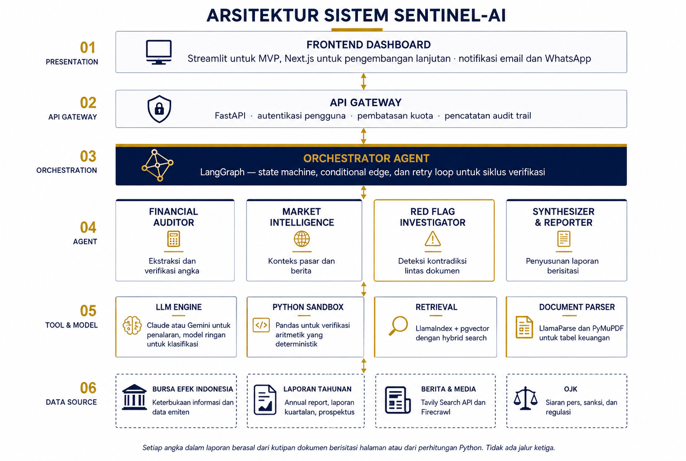
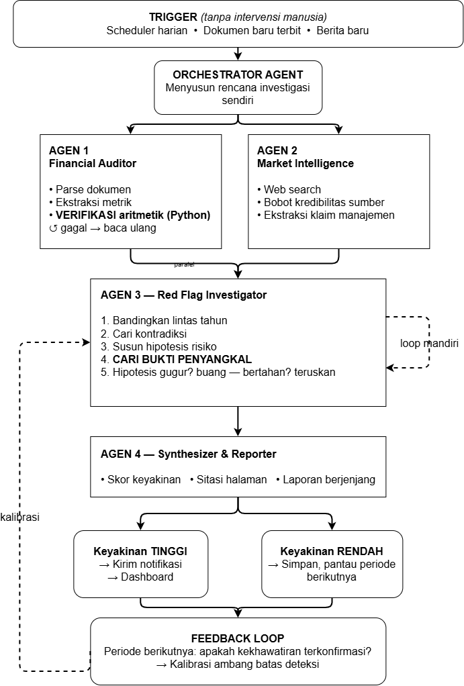
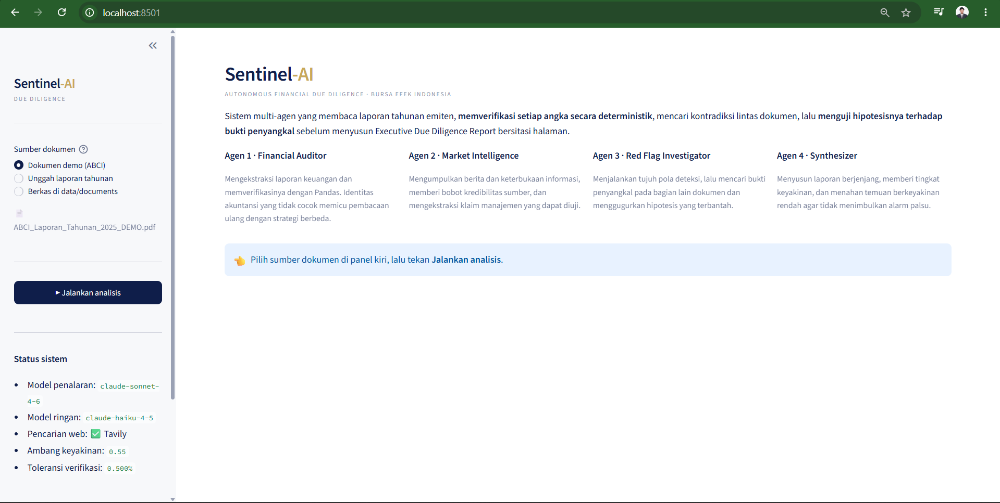
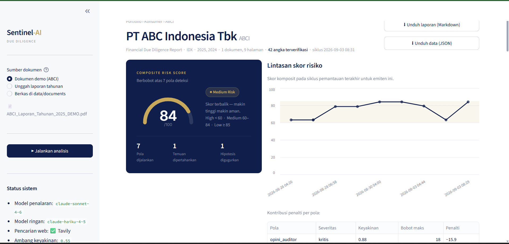
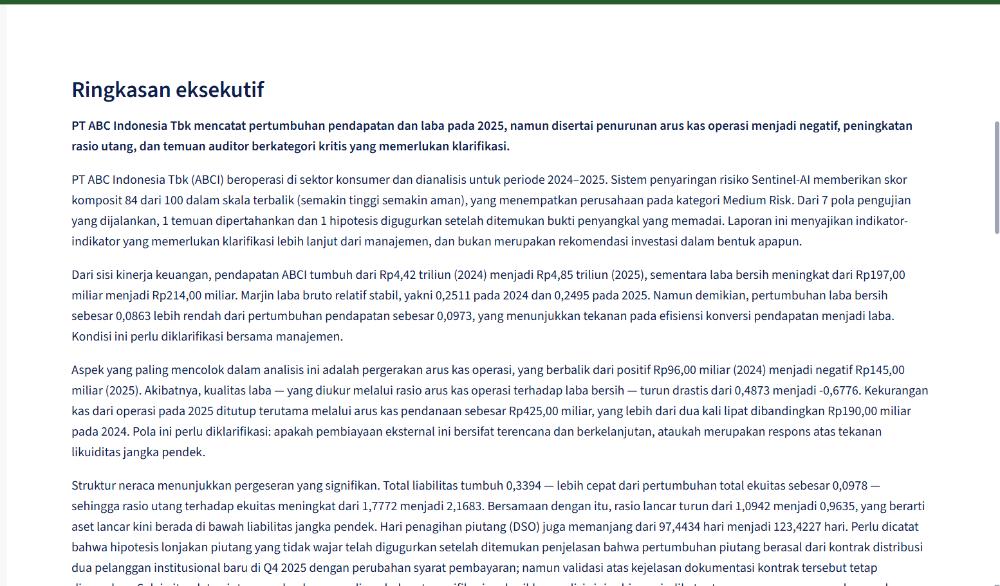
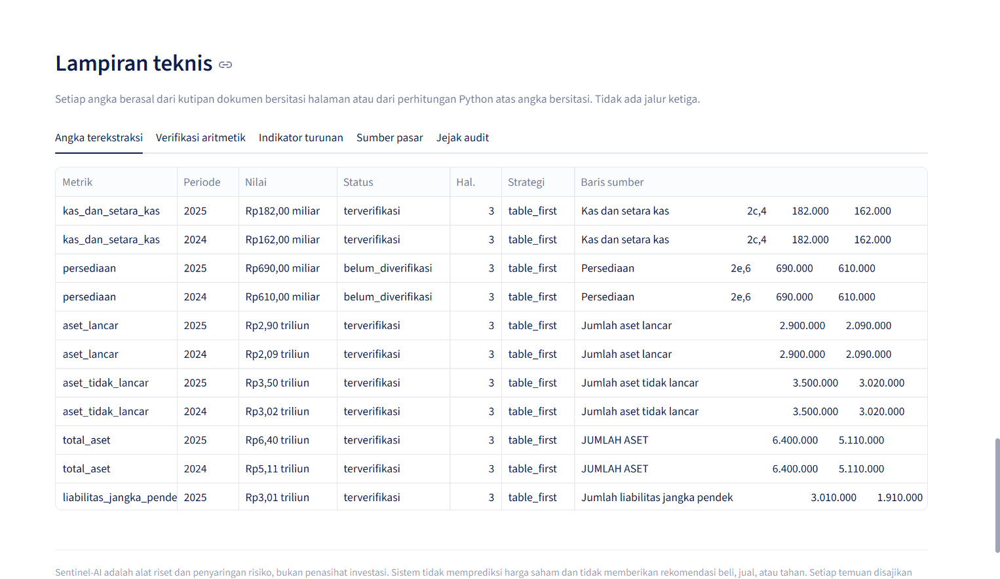
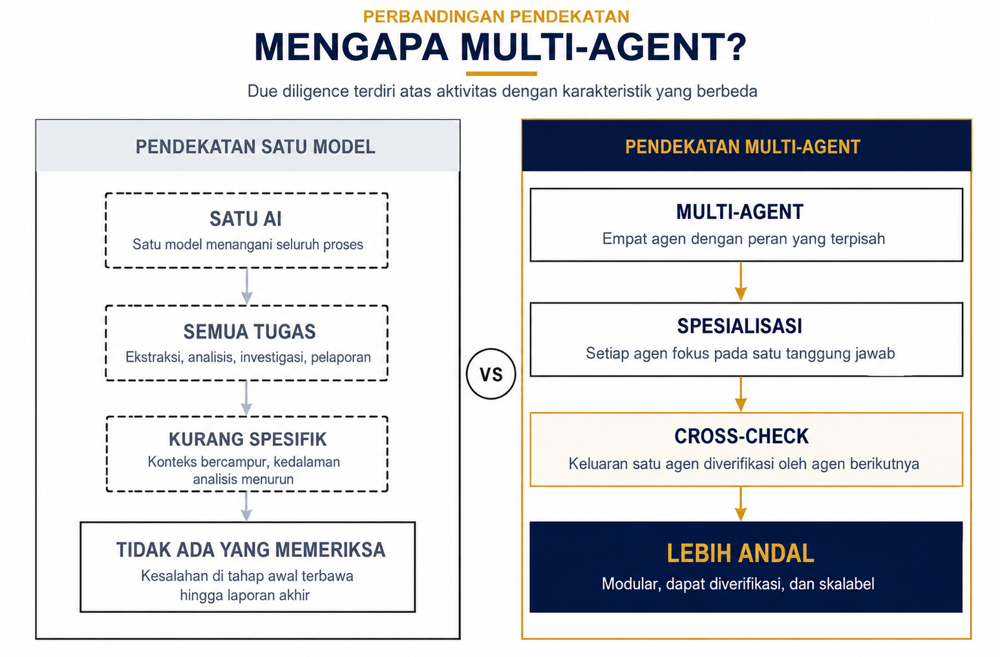
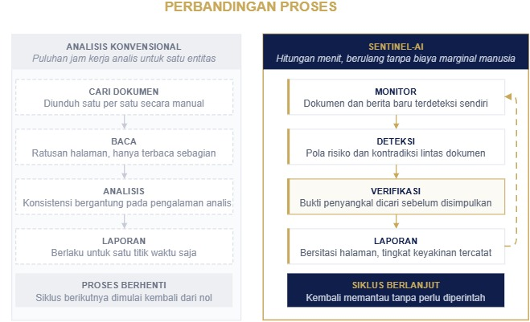
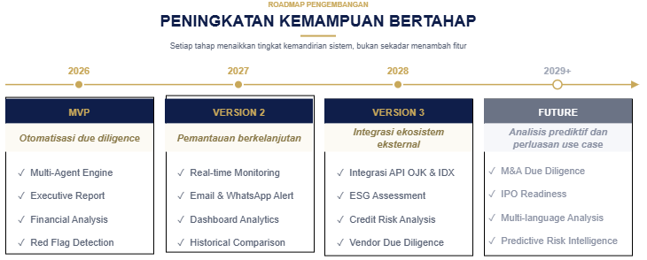

Sistem multi-agen otonom untuk financial due diligence atas emiten Bursa Efek Indonesia. Sentinel-AI membaca laporan tahunan, memverifikasi setiap angka secara deterministik, mencari kontradiksi lintas dokumen, lalu menguji setiap hipotesisnya terhadap bukti penyangkal sebelum menyusun Executive Due Diligence Report yang seluruh klaimnya tertaut ke halaman sumber.
Empat hal yang diminta panitia — ringkasan proyek, teknologi, cara menjalankan, dan cara kerja — berada pada bagian 1, 5, 6, dan 3–4.
Sentinel-AI adalah alat riset dan penyaringan risiko, bukan penasihat investasi. Sistem tidak memprediksi harga saham dan tidak memberikan rekomendasi beli, jual, atau tahan. Setiap temuan disajikan sebagai indikator yang perlu diklarifikasi kepada manajemen, disertai tautan ke halaman dokumen sumbernya. Keputusan tetap berada pada manusia.
Seluruh angka yang muncul dalam dokumen ini berasal dari PT ABC Indonesia Tbk
(ABCI) — entitas fiktif yang dibangkitkan oleh tools/demo_corpus.py dalam
konvensi tata letak laporan BEI. Entitas dibuat fiktif secara sengaja: membangkitkan
laporan keuangan atas nama emiten sungguhan lalu menanam indikator risiko di dalamnya
akan menghasilkan dokumen yang terbaca sebagai asli dan mencemarkan nama perusahaan
yang nyata.
Masalah yang diangkat, dan bentuk penyelesaiannya.
Sebuah laporan tahunan emiten Bursa Efek Indonesia berisi ratusan halaman. Untuk menilai apakah ada yang perlu dipertanyakan di dalamnya, seorang analis harus mengunduh dokumen satu per satu, membacanya sebagian, merekonsiliasi angka secara manual, dan membandingkannya dengan tahun sebelumnya serta dengan pernyataan manajemen di media. Prosesnya memakan puluhan jam kerja untuk satu entitas, konsistensinya bergantung pada pengalaman analis, dan hasilnya hanya berlaku untuk satu titik waktu — siklus berikutnya dimulai kembali dari nol.
Konsekuensinya bukan teoretis. Kasus PT Garuda Indonesia Tbk dan PT Hanson International Tbk menunjukkan bahwa indikator yang kemudian terbukti material sudah terbaca di laporan keuangan yang dipublikasikan — jauh sebelum ada yang menindaklanjutinya. Yang langka bukan datanya, melainkan kapasitas untuk membacanya secara konsisten, berulang, dan untuk banyak entitas sekaligus.
Sentinel-AI menjalankan siklus due diligence lengkap tanpa perlu diperintah. Empat agen dengan tanggung jawab terpisah bekerja di atas satu state machine: satu agen mengekstraksi dan memverifikasi angka, satu mengumpulkan konteks pasar, satu merumuskan hipotesis risiko lalu berusaha menggugurkan hipotesisnya sendiri, dan satu menyusun laporan berjenjang dengan tingkat keyakinan. Setiap keputusan tercatat di jejak audit, termasuk hipotesis yang akhirnya dibuang.
Kebanyakan sistem yang membaca dokumen keuangan berhenti pada tahap menemukan. Sentinel-AI menambahkan satu langkah yang jarang ada: setelah merumuskan sebuah dugaan risiko, agen kembali masuk ke bagian lain dokumen yang sama untuk mencari kalimat yang akan membatalkan dugaan itu — dengan halaman asal hipotesis sengaja dikecualikan dari pencarian. Baru setelah pencarian itu gagal menemukan penjelasan, dugaan naik menjadi temuan.
Efeknya terlihat langsung pada angka: dalam siklus yang didokumentasikan di Bagian 8, dari empat hipotesis yang lahir dari pola deteksi, satu digugurkan karena agen menemukan penjelasannya sendiri di halaman lain, dan satu melemah hingga jatuh di bawah ambang keyakinan. Sistem yang tidak pernah membuang hipotesisnya sendiri hanya memproduksi alarm; yang membuangnya sedang melakukan penyaringan.
Tanpa API key, sistem tetap berjalan pada jalur deterministik: ekstraksi berbasis kaption, verifikasi aritmetik, tujuh pola deteksi, dan laporan bersitasi tetap dihasilkan. Yang dilewati hanyalah adjudikasi bukti penyangkal dan narasi eksekutif — dan laporan menyatakan hal itu secara eksplisit alih-alih diam-diam menurunkan mutu.
Enam lapis, dari sumber data sampai antarmuka.

Diagram di atas menggambarkan arsitektur sasaran. Pada MVP tahap ini, lapis 01, 03, 04, 05, dan 06 sudah berjalan penuh: dashboard Streamlit, orkestrasi LangGraph, keempat agen, seluruh tool, dan sumber data dokumen serta berita. Dua hal masih berbeda dari diagram dan disebutkan di sini secara terbuka: lapis 02 (API Gateway FastAPI) belum dibangun — dashboard memanggil orkestrator langsung sebagai pustaka Python — dan penyimpanan vektor memakai Chroma, bukan pgvector, dengan jejak audit pada SQLite alih-alih PostgreSQL. Keduanya adalah pilihan sadar untuk tahap prototype: skema sengaja dibuat polos sehingga migrasi ke PostgreSQL hanya mengganti kelas vector store, tanpa menyentuh logika agen.
| Lapis | Isi | Alasan pemisahan |
|---|---|---|
| 01 Presentation | Dashboard Streamlit | Menampilkan hasil; tidak memuat logika penilaian apa pun, sehingga tampilan dapat diganti tanpa memengaruhi kesimpulan. |
| 03 Orchestration | LangGraph — state machine, conditional edge, retry loop | Satu-satunya tempat yang tahu urutan dan syarat perpindahan antaragen. Alur menjadi objek yang bisa dibaca dan diuji, bukan efek samping. |
| 04 Agent | Financial Auditor, Market Intelligence, Red Flag Investigator, Synthesizer | Setiap agen punya satu tanggung jawab. Keluaran agen sebelumnya menjadi masukan yang diperiksa agen berikutnya. |
| 05 Tool & Model | LLM engine, Python sandbox, retrieval, document parser | Penalaran dan komputasi dipisah di sini. Model memilih baris; Python membaca digitnya. |
| 06 Data Source | Laporan tahunan, berita dan media, keterbukaan informasi | Setiap sumber membawa bobot kredibilitas yang ikut menentukan keyakinan akhir sebuah temuan. |
Dari pemicu tanpa manusia sampai laporan bersitasi.

Orkestrator dibangun sebagai state machine LangGraph. Agen 1 dan 2 melakukan
fan-out dari ingest pada superstep yang sama sehingga
benar-benar berjalan paralel; join menunggu keduanya selesai.
START → plan → ingest ─┬─► financial_auditor ─┐
│ ├─► join ─┬─(verifikasi gagal)─► audit_retry ─┐
└─► market_intelligence┘ │ ▲ │
│ └────────┘
└─(selesai)─► investigate → synthesize → finalize → END
Loop pembacaan ulang berada seluruhnya di cabang audit. Ini disengaja: pembacaan ulang yang lambat tidak boleh mendahului cabang pasar masuk ke investigator, karena Agen 3 membutuhkan keduanya sudah lengkap untuk bisa menyilangkan klaim manajemen dengan angka terverifikasi.
Mengekstraksi laporan posisi keuangan, laba rugi, dan arus kas, lalu memverifikasinya
dengan Pandas. Delapan identitas akuntansi diuji per periode. Ketidakcocokan
memicu pembacaan ulang hanya pada baris yang terlibat, dengan strategi meningkat:
table_first → text_layout → line_anchored → pdfplumber.
Berjalan paralel dengan Agen 1. Setiap sumber membawa tier dan bobot kredibilitas
— idx.co.id dan ojk.go.id bernilai 1,00; media kredibel 0,70–0,85;
forum 0,15. Klaim manajemen diekstraksi dalam bentuk yang dapat diuji, menyimpan
metrik penguji dan arah yang diklaim.
Pembeda utama sistem. Tujuh pola deteksi berjalan atas angka terverifikasi dan menghasilkan hipotesis, bukan temuan. Untuk setiap hipotesis, agen merumuskan bukti apa yang akan menggugurkannya, mencarinya di bagian lain dokumen, lalu menilai: digugurkan, melemah, atau bertahan.
Menyusun laporan berjenjang, memberi tingkat keyakinan, dan menahan temuan di bawah ambang 0,55. Temuan yang ditahan tidak dihapus — ia tetap muncul di lampiran teknis beserta alasan penahanannya, sehingga keputusan kalibrasi dapat ditelaah.
| Identitas | Formula |
|---|---|
| persamaan_neraca | total_aset = total_liabilitas + total_ekuitas |
| subtotal_aset | total_aset = aset_lancar + aset_tidak_lancar |
| subtotal_liabilitas | total_liabilitas = jangka_pendek + jangka_panjang |
| laba_bruto | laba_bruto = pendapatan − beban_pokok |
| laba_usaha | laba_usaha = laba_bruto − beban_usaha |
| laba_bersih | laba_bersih = laba_sebelum_pajak − beban_pajak |
| rekonsiliasi_arus_kas | kas_akhir = kas_awal + operasi + investasi + pendanaan |
| kas_neraca_vs_arus_kas | kas_neraca = kas_akhir_periode |
| Pola | Sinyal | Ambang |
|---|---|---|
| arus_kas_vs_laba | AKO negatif sementara laba bersih positif | tanda berlawanan |
| piutang_vs_pendapatan | pertumbuhan piutang jauh melampaui pendapatan | selisih ≥ 15 pp |
| kualitas_laba_akrual | rasio akrual terhadap total aset | > 10% |
| leverage_solvabilitas | DER, rasio lancar, lonjakan leverage | DER > 2 · CR < 1 |
| pihak_berelasi | intensitas transaksi afiliasi di catatan | ≥ 3 bagian |
| opini_auditor | modifikasi opini, kelangsungan usaha | frasa spesifik |
| klaim_vs_angka | klaim manajemen bertentangan dengan angka terverifikasi | arah berlawanan |
Bukan diimbau lewat prompt, melainkan dijadikan mustahil oleh bentuk kodenya.
Model memilih baris mana pada halaman mana yang memuat sebuah metrik; Python
membaca digitnya. Skema tool ekstraksi hanya menerima penunjuk —
candidate_id dan number_index — sehingga model secara teknis
tidak punya tempat untuk menuliskan angka. Model yang tidak pernah mengetik angka
tidak dapat berhalusinasi angka.
core/state.py::Citation hanya memiliki tiga bentuk sah — document
(wajib halaman dan kutipan verbatim), computation (wajib formula), dan
web (wajib URL) — dan divalidasi Pydantic. Tidak ada jalur keempat, sehingga
angka tanpa asal-usul tidak dapat direpresentasikan di dalam sistem.
Angka yang tetap memecahkan identitas akuntansi setelah seluruh strategi pembacaan
habis ditandai tidak_dapat_diekstraksi_dengan_andal. Label itu mengalir sampai
ke laporan, dan pola deteksi yang bergantung padanya tidak dijalankan — sistem
memilih diam daripada menebak.
Setiap keputusan agen, tool yang dipanggil, hasilnya, dan alasan graph berpindah
tercatat di SQLite dengan timestamp — termasuk hipotesis yang digugurkan. Siklus
mana pun dapat diputar ulang dengan python main.py trail <run_id>.
Sebagian besar kegagalan pembaca otomatis atas laporan BEI bukan kegagalan penalaran, melainkan kegagalan membaca konvensi lokal. Hal-hal berikut ditangani di lapisan parser:
1.234.567 dibaca 1234567, (1.234) dibaca −1234, 12,5 dibaca 12.52c,4) dikenali sebagai bukan nilaiDua situasi dibedakan, dan perbedaannya menggerakkan keyakinan ke arah berlawanan. Bila pencarian tidak menemukan kandidat sama sekali, keyakinan hanya dipertahankan, tidak dinaikkan — tidak pernah mencari bukanlah konfirmasi. Bila kandidat ditemukan lalu dinilai tidak menjelaskan apa pun, keyakinan naik 5% dengan batas 0,95: bantahan yang diuji dan ditolak adalah bukti yang lebih kuat daripada ketiadaan bantahan. Severitas diturunkan dari keyakinan akhir ini.
Karena severitas diturunkan dari keyakinan, temuan yang sama dapat berpindah tingkat
antara eksekusi dengan dan tanpa model. Pada dokumen demo, pola opini_auditor
muncul sebagai tinggi (keyakinan 0,71) tanpa model dan kritis (0,88) dengan
model — dokumen sama, angka dasar sama. Yang berbeda hanyalah apakah ada model yang mampu
menimbang lima kutipan penyangkal yang berhasil ditemukan. Perbedaan itu nyata dan
disengaja, bukan ketidakstabilan.
Pustaka, model, dan alasan setiap pemilihan.
| Kategori | Teknologi | Peran dan alasan pemilihan |
|---|---|---|
| Bahasa | Python 3.11+ (diuji 3.13) | Ekosistem parsing PDF dan analisis numerik paling matang. |
| Model penalaran | claude-sonnet-4-6 | Ekstraksi terpandu skema, adjudikasi bukti penyangkal, dan sintesis naratif. |
| Model ringan | claude-haiku-4-5 | Klasifikasi murah pada langkah yang tidak memerlukan penalaran panjang — strategi model berjenjang untuk menekan biaya. |
| Orkestrasi | langgraph langgraph-checkpoint-sqlite |
State machine eksplisit dengan conditional edge dan retry loop. Dipilih karena alur menjadi objek yang dapat diuji, bukan rangkaian pemanggilan bersarang. |
| Parsing dokumen | pymupdf pdfplumber |
PyMuPDF sebagai parser utama (teks, tabel, koordinat); pdfplumber sebagai strategi cadangan untuk tata letak tabel yang keras kepala. |
| Verifikasi | pandas · numpy | Lapisan aritmetik deterministik. Seluruh identitas akuntansi dihitung di sini, tidak pernah oleh model. |
| Retrieval | llama-index-core chromadb HuggingFace embeddings |
Pencarian semantik bukti penyangkal. Turun otomatis ke BM25 murni-Python bila model embedding tidak tersedia; backend yang dipakai dicatat di jejak audit. |
| Pencarian web | tavily-python · httpx | Berita dan keterbukaan informasi, dengan tier kredibilitas per domain. |
| Penjadwal | apscheduler | Dua pemicu otonom: sapuan terjadwal harian dan deteksi dokumen baru tiap 15 menit. |
| Antarmuka | streamlit · altair | Dashboard dan grafik lintasan skor. Dipilih untuk kecepatan iterasi pada tahap MVP. |
| Skema & konfigurasi | pydantic · python-dotenv | Validasi state antaragen. Pydantic-lah yang membuat sitasi tanpa sumber mustahil direpresentasikan. |
| Penyimpanan | SQLite · Chroma | Jejak audit dan indeks vektor. Skema sengaja polos agar migrasi ke PostgreSQL + pgvector tidak menyentuh logika agen. |
| Pengujian | pytest | 73 pengujian; integrasi memakai stub LLM, bukan panggilan jaringan. |
DocumentIndex perlu disentuh.core/llm.py, sehingga penggantian penyedia tidak menyentuh logika agen.Dari repositori kosong sampai laporan pertama.
# Windows python -m venv .venv && .venv\Scripts\activate pip install -r requirements.txt # Linux / macOS python3 -m venv .venv && source .venv/bin/activate pip install -r requirements.txt
copy .env.example .env # Windows cp .env.example .env # Linux / macOS
Isi ANTHROPIC_API_KEY dan TAVILY_API_KEY. Keduanya opsional —
tanpa keduanya sistem tetap berjalan pada jalur deterministik dan menyatakan hal itu di
laporan.
| Variabel | Default | Keterangan |
|---|---|---|
| ANTHROPIC_API_KEY | — | Tanpa ini sistem berjalan deterministik |
| SENTINEL_MODEL_PRIMARY | claude-sonnet-4-6 | Penalaran: ekstraksi, falsifikasi, sintesis |
| SENTINEL_MODEL_LIGHT | claude-haiku-4-5 | Klasifikasi murah |
| TAVILY_API_KEY | — | Tanpa ini Agen 2 memakai fixture atau dilewati |
| SENTINEL_OFFLINE | 0 | 1 menonaktifkan seluruh panggilan jaringan |
| SENTINEL_VERIFY_REL_TOLERANCE | 0.005 | Toleransi relatif identitas akuntansi |
| SENTINEL_MAX_EXTRACTION_ATTEMPTS | 3 | Batas pembacaan ulang |
| SENTINEL_MIN_CONFIDENCE | 0.55 | Ambang temuan naik ke ringkasan eksekutif |
| SENTINEL_MONITOR_CRON | 0 3 * * * | Jadwal sapuan otonom |
| SENTINEL_WATCHLIST | GOTO,BUMI,TLKM | Entitas yang dipantau |
python main.py demo # pipeline lengkap + jejak audit langsung streamlit run frontend/app.py # dashboard pytest -q # 73 pengujian
| Perintah | Fungsi |
|---|---|
| python main.py demo | Siklus penuh atas dokumen demo, jejak audit tercetak langsung |
| python main.py demo --rebuild | Membangun ulang dokumen demo dari awal |
| python main.py analyze GOTO --pdf a.pdf | Analisis laporan emiten sungguhan |
| python main.py runs | Riwayat seluruh siklus yang pernah dijalankan |
| python main.py trail <run_id> | Memutar ulang jejak keputusan satu siklus |
| python main.py monitor --once | Satu sapuan otonom lalu keluar |
| python main.py monitor | Pemantauan berkelanjutan |
python -m scheduler.monitor --tickers ABCI,GOTO --doc-dir data/documents
Dua pemicu berjalan: sapuan terjadwal (SENTINEL_MONITOR_CRON, default 03:00)
dan deteksi dokumen baru tiap 15 menit. Setiap entitas disidik dengan hash isi berkas,
sehingga siklus hanya berjalan ketika dokumen benar-benar berubah — menganalisis ulang
laporan yang tidak berubah hanya menghabiskan token untuk laporan yang identik.
Unduh laporan tahunan dari idx.co.id, lalu:
python main.py analyze GOTO --pdf laporan.pdf \
--name "PT GoTo Gojek Tokopedia Tbk" --sector teknologi
Tangkapan layar dari sistem yang benar-benar berjalan, bukan mockup.




belum_diverifikasi pada persediaan — sistem tidak menyembunyikan angka
yang tidak masuk ke dalam identitas akuntansi mana pun. Tab lain memuat verifikasi
aritmetik, indikator turunan, sumber pasar, dan jejak audit.Satu siklus penuh, dijalankan pada 3 September 2026 · run 6403d85c277b.
Bagian ini bukan deskripsi rancangan melainkan catatan satu eksekusi yang benar-benar terjadi, dengan model dan pencarian web aktif. Seluruh angka di bawah diambil dari jejak audit siklus tersebut.
| Langkah | Agen | Hasil |
|---|---|---|
| 001–004 | Orchestrator | Menyusun rencana investigasi sendiri (prioritas piutang_vs_pendapatan, kualitas_laba_akrual), parsing 9 halaman, membangun indeks retrieval — backend chroma, pencarian semantik aktif |
| 005–017 | Financial Auditor | Ekstraksi tiga laporan keuangan, 16 dari 16 identitas akuntansi cocok tanpa perlu pembacaan ulang, 22 rasio dan 9 tren dihitung dari angka tersitasi |
| 006–014 | Market Intelligence (paralel) | 7 kueri, 34 sumber unik — tier 2: 2, tier 3: 31, tier 4: 1. Tidak ada klaim manajemen yang dapat diuji, sehingga pola klaim_vs_angka tidak dijalankan |
| 018–019 | Orchestrator | Menggabungkan kedua cabang paralel: 46 angka terekstraksi, 34 sumber pasar terkumpul |
| 020–036 | Red Flag Investigator | 7 pola dijalankan → 4 hipotesis → pencarian bukti penyangkal → 3 dipertahankan, 1 digugurkan |
| 037–041 | Synthesizer | Ambang keyakinan 0,55 diterapkan: 2 ditampilkan, 1 ditahan. Skor 78,7 — Medium Risk |
Inilah bagian yang paling menunjukkan bahwa agen benar-benar menguji dugaannya sendiri. Empat hipotesis menghasilkan empat hasil yang berbeda:
| ID | Hipotesis | Verdict | Alasan yang dicatat agen |
|---|---|---|---|
| H2 | Piutang tumbuh 39,0% sementara pendapatan tumbuh 9,7% | DIGUGURKAN | Setelah menarik 6 kutipan dari bagian lain dokumen, agen menemukan bahwa lonjakan piutang disebabkan perubahan syarat pembayaran dari 60 ke 90 hari untuk pelanggan institusional baru. Hipotesis dibuang oleh agen itu sendiri. |
| H1 | Arus kas operasi negatif Rp145 miliar meski laba bersih positif Rp214 miliar | MELEMAH | Kutipan menjelaskan sebagian — arus kas negatif terutama berasal dari peningkatan piutang akibat perubahan termin. Keyakinan diturunkan hingga jatuh di bawah ambang 0,55 dan temuan ditahan di lampiran teknis. |
| H3 | DER 2,17x dan rasio lancar 0,96x | BERTAHAN | Kutipan justru memperkuat hipotesis: pinjaman jangka pendek melonjak hampir dua kali lipat dari Rp730 miliar menjadi Rp1.520 miliar. Naik menjadi temuan dengan severitas sedang. |
| H4 | Opini auditor memuat emphasis of matter dan going concern | BERTAHAN | Lima kutipan ditarik, tidak satu pun menyentuh isi laporan auditor. Ketiadaan penjelasan pada bagian lain dokumen membuat hipotesis naik menjadi temuan berkategori kritis (keyakinan 0,88). |
Sebuah sistem yang selalu mengembalikan seluruh dugaannya sebagai temuan tidak sedang menyaring apa pun — ia hanya memindahkan beban verifikasi kembali ke manusia. Dalam siklus ini, dua dari empat dugaan tidak sampai ke ringkasan eksekutif: satu dibuang, satu ditahan di bawah ambang. Keduanya tetap tercatat lengkap di lampiran teknis beserta alasannya, sehingga keputusan itu dapat ditelaah dan tidak perlu dipercaya begitu saja.
Dokumen yang sama dijalankan dua kali untuk menunjukkan apa yang sebenarnya disumbangkan oleh lapisan penalaran — dan apa yang tetap berjalan tanpanya.
| Aspek | Jalur deterministik | Dengan model aktif |
|---|---|---|
| Verifikasi aritmetik | 16/16 cocok | 16/16 cocok — identik |
| Cakupan verifikasi | 100% | 100% — identik |
| Pola dijalankan | 7 | 7 — identik |
| Hipotesis digugurkan | 0 | 1 |
| Temuan naik ke ringkasan | 4 | 2 (+1 ditahan) |
| Skor komposit | 63,2 — Medium Risk | 78,7 — Medium Risk |
| Pemakaian model | — | 9 panggilan · 23.082 token masuk · 5.881 token keluar |
Bacaannya: lapisan deterministik menghasilkan seluruh angka dan seluruh pola tanpa bantuan model sama sekali. Yang disumbangkan model adalah kemampuan menimbang bukti penyangkal — dan efeknya adalah laporan yang lebih sedikit alarmnya, bukan lebih banyak. Tanpa model, sistem bersikap konservatif dan menahan diri untuk tidak menyimpulkan; dengan model, ia dapat memutuskan mana dugaan yang sudah terjawab oleh dokumen itu sendiri.
73 pengujian, seluruhnya lulus.
$ pytest -q
........................................................................ [ 98%]
. [100%]
73 passed in 25.49s
| Berkas | Jumlah | Cakupan |
|---|---|---|
| tests/test_verification.py | 58 | Lapisan deterministik: parsing angka Indonesia, penerapan skala, identitas akuntansi, pemilihan kaption, strategi pembacaan ulang |
| tests/test_pipeline.py | 15 | Integrasi pipeline, perpindahan graph, jalur falsifikasi, dan pembentukan laporan |
Pengujian integrasi memakai stub LLM, bukan panggilan jaringan. Itu bukan sekadar soal kecepatan CI. Stub hanya bisa mengembalikan penunjuk baris dan kolom, dan asersinya memastikan angka yang dihasilkan memang berasal dari dokumen. Stub yang mencoba mengembalikan angka tidak punya tempat untuk menaruhnya — dengan kata lain, kontrak arsitekturnya yang diuji, bukan hanya dijelaskan.
Varian dokumen yang sengaja tidak konsisten dapat dibangkitkan untuk mendemonstrasikan loop pembacaan ulang:
from tools.demo_corpus import build_demo_pdf build_demo_pdf(overwrite=True, corrupt_balance=True)
Sistem akan mencoba tiga strategi pembacaan berturut-turut, gagal
merekonsiliasi baris ekuitas, lalu melaporkannya sebagai
tidak dapat diekstraksi dengan andal — alih-alih menebak.
Pemisahan peran bukan hiasan arsitektur, melainkan syarat agar keluaran dapat diperiksa.


Setiap tahap menaikkan tingkat kemandirian sistem, bukan sekadar menambah fitur.

| Pekerjaan | Alasan dan dampaknya |
|---|---|
| API Gateway (FastAPI) | Memisahkan dashboard dari orkestrator sesuai docs/api_contract.md, sehingga antarmuka lain — mobile, notifikasi, integrasi pihak ketiga — dapat memakai mesin yang sama. |
| Validasi atas laporan emiten sungguhan | Menguji document_parser.py terhadap 15–20 laporan tahunan nyata dari satu sektor. Parsing tabel keuangan adalah tantangan teknis utama proyek ini dan harus divalidasi terhadap dokumen asli, bukan hanya korpus demo. |
| Kalibrasi ambang berbasis data | Ambang pola saat ini dikalibrasi terhadap konvensi penyaringan umum. Kalibrasi terhadap basis data temuan historis akan menggantikannya. |
| Dukungan OCR | Membuka laporan hasil pindai yang saat ini belum dapat diproses. |
Dinyatakan terbuka, karena sistem yang menyembunyikan batasnya tidak dapat dipercaya soal apa pun.
core/state.py::METRIC_VOCABULARY
mencakup pos utama laporan keuangan. Emiten sektor keuangan memakai kaption berbeda dan
memerlukan penambahan alias sebelum dapat dianalisis dengan benar.docs/api_contract.md, implementasinya belum.klaim_vs_angka tidak dijalankan sama sekali. Sistem melaporkannya sebagai pola
yang tidak berjalan, bukan sebagai pola yang lulus.Sentinel-AI adalah alat riset dan penyaringan risiko, bukan penasihat investasi. Sistem tidak memprediksi harga saham dan tidak memberikan rekomendasi beli, jual, atau tahan. Setiap temuan disajikan sebagai indikator yang perlu diklarifikasi kepada manajemen, disertai tautan ke halaman dokumen sumbernya. Angka yang tidak dapat diverifikasi dinyatakan demikian, bukan ditebak. Keputusan tetap berada pada manusia.
files/SENTINEL-AI-LAST-REPORT.pdf.